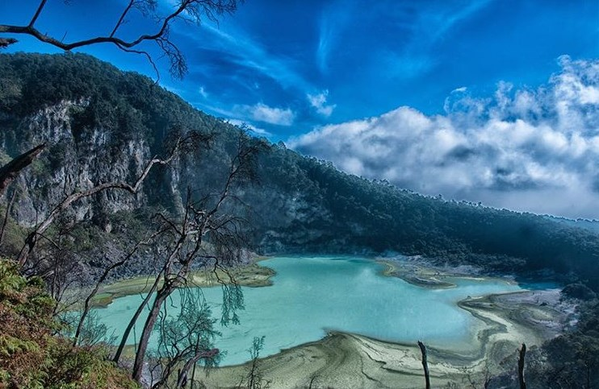

Kawah Putih

Kawah Putih adalah tempat wisata di Bandung yang paling terkenal. Berlokasi di Ciwidey, Jawa Barat, kurang lebih sekitar 50 KM arah selatan kota Bandung, Kawah Putih adalah sebuah danau yang terbentuk akibat dari letusan Gunung Patuha. Sesuai dengan namanya, tanah yang ada di kawasan ini berwarna putih akibat dari pencampuran unsur belerang. Selain tanahnya yang berwarna putih, air danau kawasan Kawah Putih juga mempunyai warna yang putih kehijauan dan dapat berubah warna sesuai dengan kadar belerang yang terkandung, suhu, dan cuaca. Kawah Putih Kawah Putih Kawah Putih Ciwidey berada di kawasan pegunungan yang mempunyai ketinggian lebih dari 2.400 meter di atas permukaan laut. Dengan ketinggian tersebut, suhu udara di kawasan Kawah Putih tentu saja dingin dengan suhu 8 derajat Celsius sampai dengan 22 derajat Celsius, oleh karena itu jangan lupa membawa jaket atau memakai pakaian yang tebal. Selain untuk dinikmati keindahannya oleh para wisatawan, Kawah Putih Ciwidey juga sering kali menjadi tempat kegiatan lain, misalnya pengambilan gambar film, melukis, foto pengantin, sampai dengan kegiatan mendaki dan berkuda.